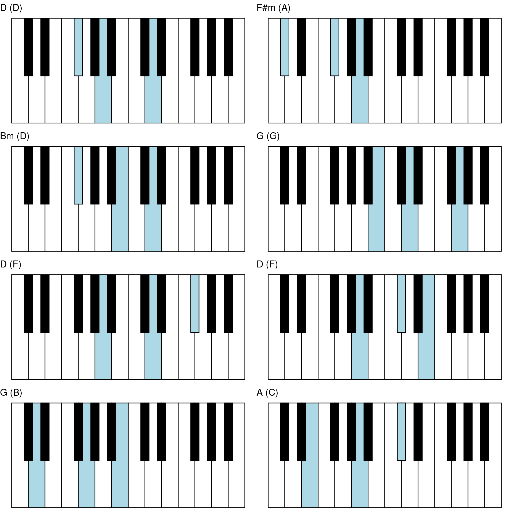

example-chart.Rmdlabels <- FALSE
ps <- list()
p_D_D <- keys_chords %>%
highlight_chord(chord = construct_chord_major("D"), highest_tone = "D") %>%
ggpiano(labels = labels) +
labs(title = "D (D)")
ps <- append(ps, list(p_D_D))
p_Fsm_A <- keys_chords %>%
highlight_chord(chord = construct_chord_minor("F#"), highest_tone = "A") %>%
ggpiano(labels = labels) +
labs(title = "F#m (A)")
ps <- append(ps, list(p_Fsm_A))
p_Bm_D <- keys_chords %>%
highlight_chord(chord = construct_chord_minor("B"), highest_tone = "D") %>%
ggpiano(labels = labels) +
labs(title = "Bm (D)")
ps <- append(ps, list(p_Bm_D))
p_G_G <- keys_chords %>%
highlight_chord(chord = construct_chord_major("G"), highest_tone = "G") %>%
ggpiano(labels = labels) +
labs(title = "G (G)")
ps <- append(ps, list(p_G_G))
p_D_F <- keys_chords %>%
highlight_chord(chord = construct_chord_major("D"), highest_tone = "F#") %>%
ggpiano(labels = labels) +
labs(title = "D (F)")
ps <- append(ps, list(p_D_F))
p_A_E <- keys_chords %>%
highlight_chord(chord = construct_chord_major("A"), highest_tone = "E") %>%
ggpiano(labels = labels) +
labs(title = "D (F)")
ps <- append(ps, list(p_A_E))
p_G_B <- keys_chords %>%
highlight_chord(chord = construct_chord_major("G"), highest_tone = "B") %>%
ggpiano(labels = labels) +
labs(title = "G (B)")
ps <- append(ps, list(p_G_B))
p_A_C <- keys_chords %>%
highlight_chord(chord = construct_chord_major("A"), highest_tone = "C#") %>%
ggpiano(labels = labels) +
labs(title = "A (C)")
ps <- append(ps, list(p_A_C))